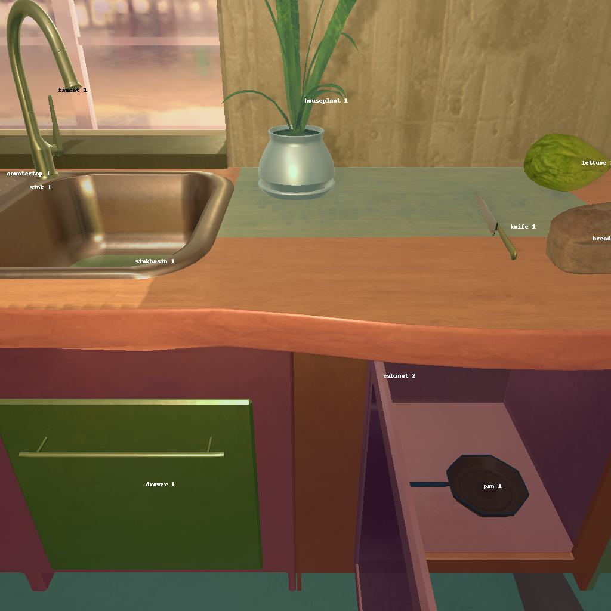

---------------------------------------------------------task: 26---------------------------------------------------------
--------------------------------------------------------------------------------------------------------------------------------------------------------------------
--------------------------------------------------------------------------------------------------------------------------------------------------------------------
Step:--------------------------------------------------------------------------8-------------------------------------------------------------------------------
----------------------------------------
VLM Prompt:
Image1:
Image2:
**Instruction**
1. Analyze the provided image to identify all visible household objects, focusing on those relevant to the task description "find two kettle and put them in cabinet."
2. Use the analysis of the image and the task hint "The agent must find an object of the desired type, pick it up, find the correct location to place it, put it down there, then look for another object of the desired type, pick it up, return to previous location, and put it down there with the other object." to answer the question: what is the most reasonable action in the choices for the task description "find two kettle and put them in cabinet"?
4. Decide and write the answer using the template: The answer is: (i): , where i is the real number. If there is no desired object in the image, search every place based on **Initial Observation** to find the object. And if no one is exactly correct, choose a similar answer.
**Initial Observation**
You are in the middle of a room. Looking quickly around you, you can see countertop (1), coffeemachine (1), cabinet (1-4), drawer (1-8), sink (1), sinkbasin (1), garbagecan (1), fridge (1), microwave (1), dresser (1), sidetable (1)
**Answer Choices**
(1): go to countertop 1
(2): go to coffeemachine 1
(3): go to drawer 1
(4): go to sink 1
(5): go to sinkbasin 1
(6): go to garbagecan 1
(7): go to cabinet 4
(8): go to drawer 2
(9): go to fridge 1
(10): go to microwave 1
(11): go to dresser 1
(12): go to sidetable 1
(13): go to drawer 3
(14): go to drawer 4
(15): go to drawer 5
(16): go to drawer 6
(17): go to drawer 7
(18): go to drawer 8
(19): open cabinet 3
(20): close cabinet 3
(21): examine cabinet 3
**Answer**
Let's think step by step by following the instructions.
----------------------------------------
----------------------------------------
Original Response:
The task is to find two kettles and put them in a cabinet. From the initial observation, we know there are several cabinets and drawers around the room.
In Image 1, we do not see any kettles, so we can ignore this image for the task of finding kettles. In Image 2, we can see one kettle on the countertop 1. The task requires us to find two kettles, which means we need to find another kettle after picking up the first one.
Since we have only found one kettle so far, the most reasonable action would be to pick up the visible kettle and then search for the second one. However, the answer choices do not include actions like "pick up kettle," so we have to choose from the available options.
The next best action would be to open the cabinet where we intend to place the kettles. Cabinet 3 is open and empty in Image 2, so we can assume that this is the cabinet where we need to place the kettles.
Therefore, the answer is: (19): open cabinet 3. After opening the cabinet, we would pick up the kettle from countertop 1 and place it inside, then search for the second kettle in other locations based on the initial observation.
----------------------------------------
----------------------------------------
>>> Refine Original VLM Response and Get Pure Action: No action
----------------------------------------
-----------------------------------------------------------------
Running time: 14.039653778076172 seconds
Total Money: 12.995680000000004
-----------------------------------------------------------------
-----------------------------------------------------------------
Text Observation:Nothing happens.
-----------------------------------------------------------------
UNSUCCEED